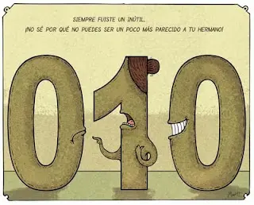
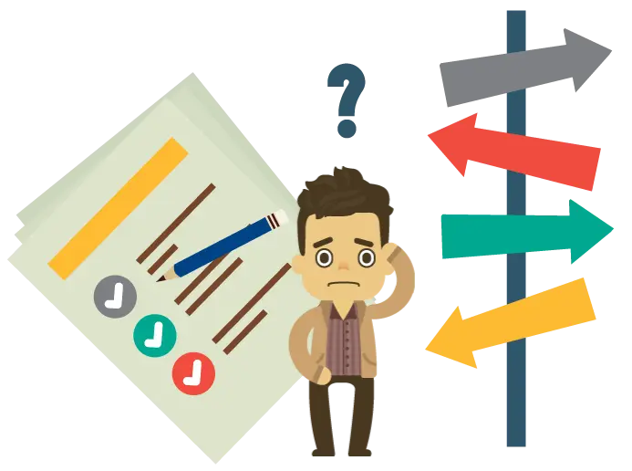

// FORMACIÓN Y DESARROLLO
Controlador motor BLDC
Partiendo de un motor extraído de un disco rígido en desuso. Montamos todo el proyecto sombre la misma PCB para facilitar el trabajo mecánico de orientar los sensores ópticos para la lectura de las ranuras de encoder.
1 de diciembre de 2011 · 1 minuto de lectura

Partiendo de un motor extraído de un disco rígido en desuso. Montamos todo el proyecto sombre la misma PCB para facilitar el trabajo mecánico de orientar los sensores ópticos para la lectura de las ranuras de encoder. Con tres líneas pudimos identificar todos los estados necesarios del disco. Las dos primeras, generan un código tipo Gray de donde se obtiene velocidad y sentido de giro. El tercero y más interno es un solo pulso por circunferencia para control de errores y por simplicidad, cálculo de RPM.
Aprovechando la geometría del eje del motor el encoder se imprimió sobre un CD/DVD, para ahorrar problemas de desbalanceo que pudieras ocurrir al montar otro mecanismo, ya que estamos hablando de un motor que funciona a 2500 RPM sin problemas. Cualquier carga desbalanceada produciría vibraciones pudiendo afectar al conjunto y haciendo las prácticas un tanto inviables.
Para más detalles puedes leer el paper final del proyecto:
Estudios relacionados

41% Ingeniero
El piano marca el límite y si se intenta ir más allá se pone en juego la solides de las bases con la que uno siempre quiso trabajar.
Septiembre 2011
34% Ingeniero electrónico
A veces pequeños logros son los que ayudan a seguir adelante, simplemente hay que encontrar el momento y lugar adecuado, sin perder las esperanzas.
Marzo 2011
26% Ingeniero electrónico
Al tomar una decisión existe el riesgo de que sea correcta o incorrecta. Uno debe analizar su entorno y decir.
Febrero 2010// EL SIGUIENTE PASO
TU PRODUCTO.
SU PRÓXIMA ETAPA.
Una primera conversación para entender el desafío y ver si puedo aportar valor.
↗ Hablemos de tu proyecto